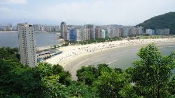

E as cidades que ela tem
São Vincente se fundou em 22 de Janeiro de 1532,
Com a chegada de Martim Afonso, São Vincente seria oficialmente colonizada, se tornando a primeira vila do Brasil! Alguns membros da navegação se juntaram a um antigo povoado de São Vincente

Onde eles extrairiam a madeira Pau-Brasil e plantariam Cana-de-Açúcar. Eles também foram atacados por indígenas locais, os Tamoios, eles precisaram chamar o João Ramalho para lidar com os Tamoios.